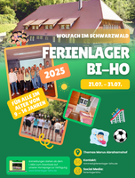
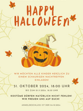
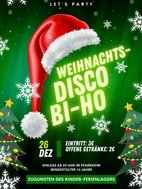

Endecke neue Freundschaften und unvergessliche Momente - sei Teil unseres Ferienlagers und erlebe die Sommer deines Lebens.
Über
Das Ferienlager Birken - Honigsessen ist seit mehr als drei Jahrzehnten ein fester Bestandteil in der Gemeinde und im Kalender der Kinder und Jugendlichen aus dem gesamten Westerwaldkreis. Für elf Tage stehen während der Sommerferien Spaß, Spiel und neue Freunde auf dem Plan. Betreut werden die zwischen 50 und 65 Kindern im Altern von 9 bis 14 Jahren dabei von ausgebildeten Jugendleitern, welche diese Tätigkeit ehrenamtlich und mit Freude ausführen. Die Zielorte wechseln jedes Jahr. Die Aktivitäten reichen von Schnitzeljagd bis hin zum Schwimmbadbesuch, wobei Spaß, Gemeinschaftssinn und Eigenständigkeit der Kinder im Vordergrund stehen.
Veranstaltungen
Neben den 11 ereignisreichen Tagen im Ferienlager stehen noch weitere Veranstaltungen an:
Jedes Jahr an Karneval könnt ihr euch fürs Ferienlager anmelden.
Um die erlebnisreichen Tage Revue passieren zu lassen, verbringen wir ein Wochenende mit Fotoshow für die Eltern & Übernachtung und Ausflug für die Kinder.
Jedes Jahr am 2. Weihnachtstag kommen wir feucht fröhlich im Pfarrheim Birken-Honigsessen zusammen um gemeinsam zu feiern.
Lern unser Team kennen